Lately everyone in my social feed is sharing flower photos.
After a while they all look the same.
How do you shoot something different?
Maybe you have overlooked some important elements.
The Chinese style around you!
There are many elements unique to China around us.
If you take these elements into account when you shoot flowers,
you will shoot photos that differ from everyone else's.
For example:
1. Tile-roofed houses
The tile-roofed house is a traditional Chinese dwelling.
It shows a plain, simple, deep, and quiet beauty,
and it carries traditional Chinese culture.
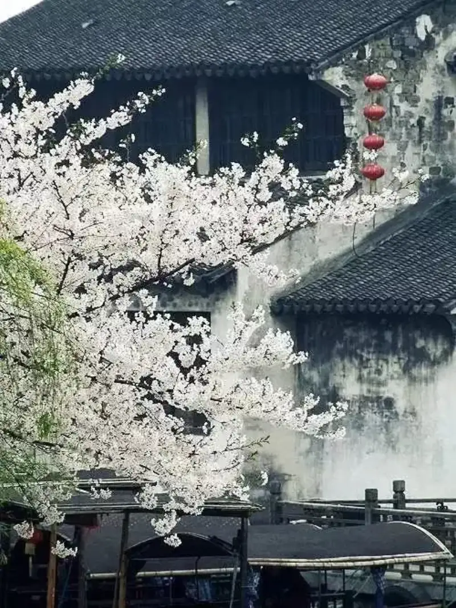
Whether red brick with green tile, or gray brick with gray tile,
you feel a plain, rustic, quiet, and weighty beauty.
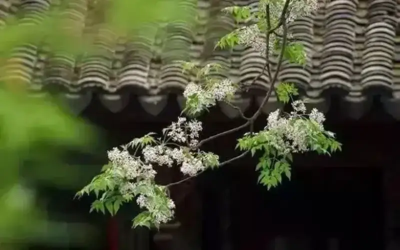
Today, more and more old buildings disappear.
The culture and beauty of the past
can only be traced in photos as faint traces.
When you meet such a scene, do not miss it.
2. Flower windows
The flower window is a decorative form of window in ancient Chinese garden architecture.
It is a beautifying form that is both practical and decorative.
Flower windows appear often in classical Chinese architecture,
and they are also widely used in modern buildings.
The retro style shows a real cultural depth.
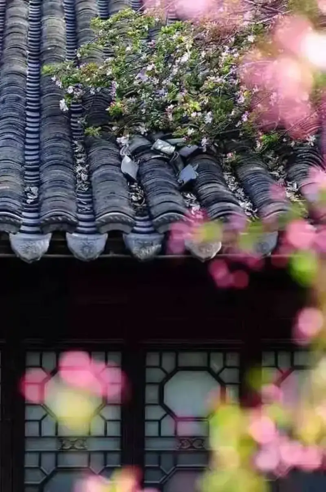
A tile-roofed house with distinctive windows
is charming in itself,
and with the accent of flowers, the Chinese feel is strong.
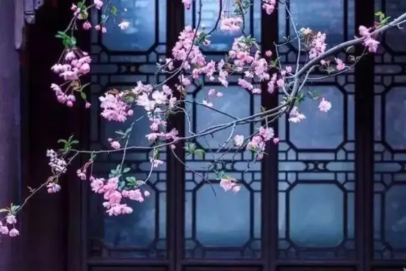
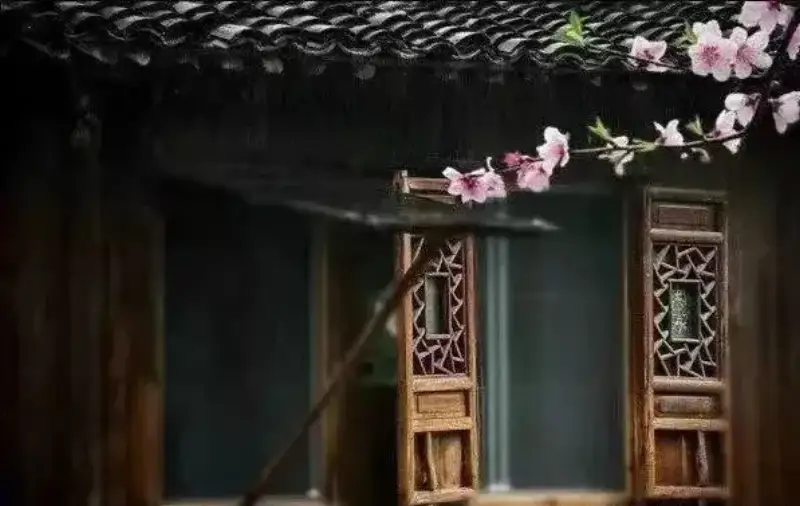
This kind of supported window plus a pretty window lattice,
with a sprig of peach blossom as accent, is full of poetry.
Such a frame gives the viewer much to think and dream about.
3. Red walls
Chinese people have a special feeling for red.
Red stands for joy, liveliness, and peace.
It is the favorite color of the Chinese nation,
and it has even become a cultural totem and spiritual home for Chinese people.
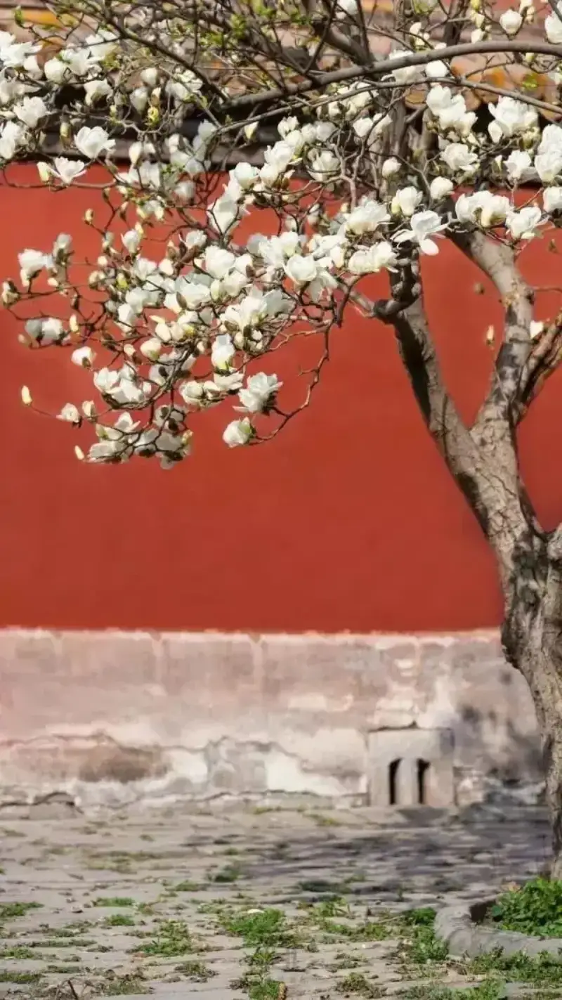
A large red wall as a background
both simplifies the frame and sets off the subject well,
and this kind of background suits flower photography very well.
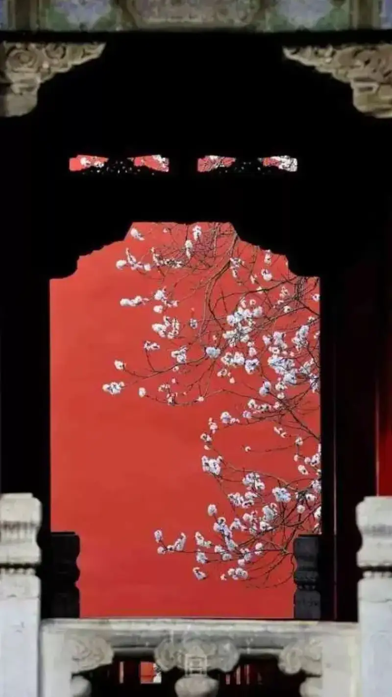
Add distinctive Chinese architecture,
and with the red wall as background, the Chinese feel is complete.
4. Imperial gardens
Imperial gardens are full of history.
Their architecture is distinctive, and the gardens are beautiful.
They suit flower photography.
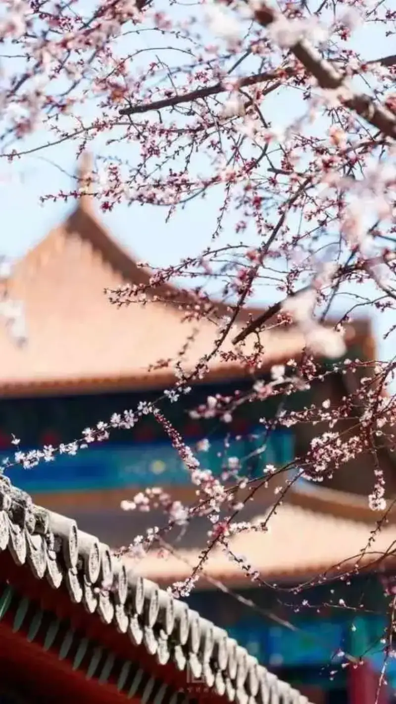
When you shoot in a place like the Forbidden City,
any casual framing carries a strong Chinese feel,
the architecture is distinctive, and the colors are bright.
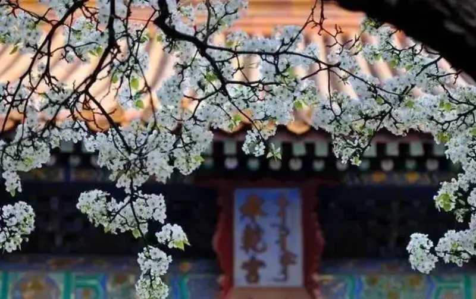
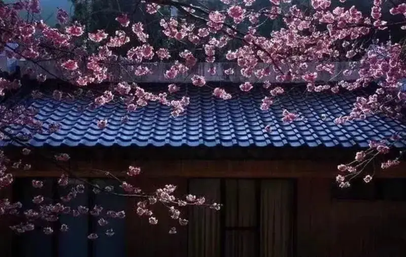
Glazed tile is also full of character.
China used glazed tile as decoration as early as the Northern and Southern Dynasties,
and it has a different character from ordinary gray folk tile.
5. Huizhou architecture
Huizhou architecture is also called the Huizhou style.
It is one of the most important schools of traditional Chinese architecture,
and it has long been admired by architects at home and abroad.
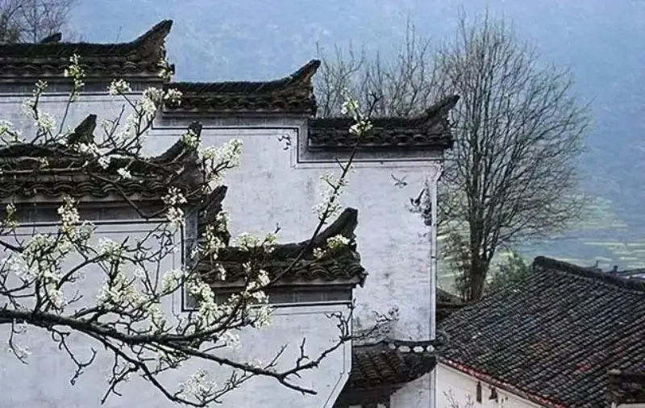
The Huizhou style has simple lines and large white walls,
which suits photography very well. It is one of the subjects photographers love most.
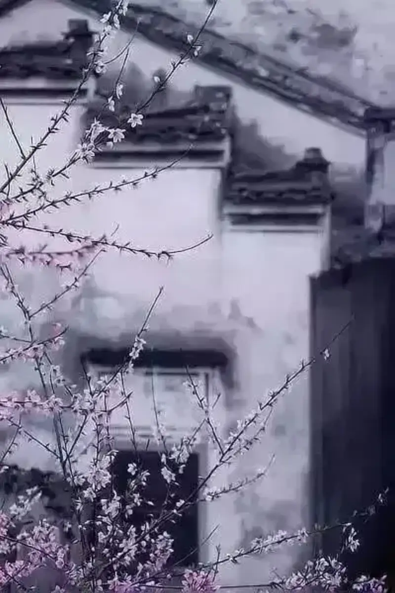
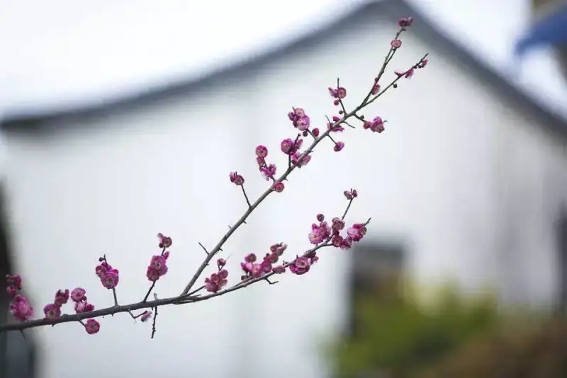
Simple lines plus white walls have the feel of Chinese painting.
For such photos, the simpler the frame, the better.
6. Lanterns
The lantern is an old traditional Chinese craft.
Around the Lantern Festival on the fifteenth day of the first lunar month each year,
people hang up red lanterns that symbolize reunion,
to create a festive mood.
Later the lantern became a symbol of Chinese celebration.
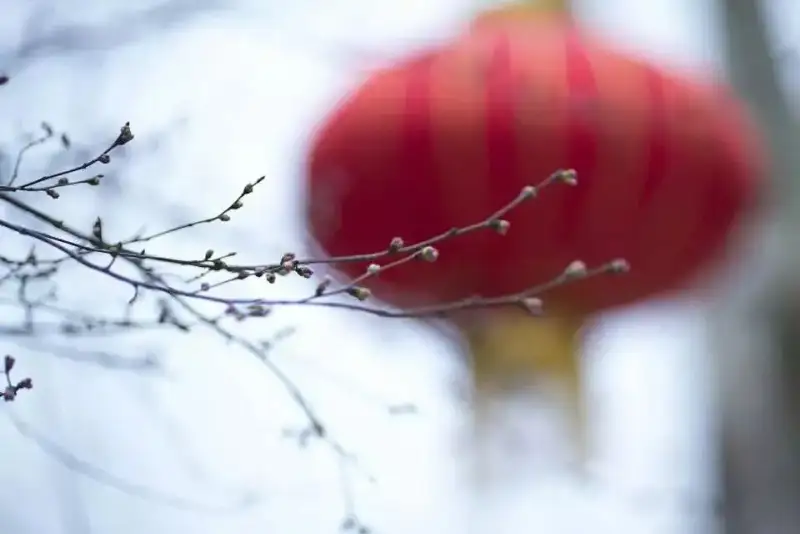
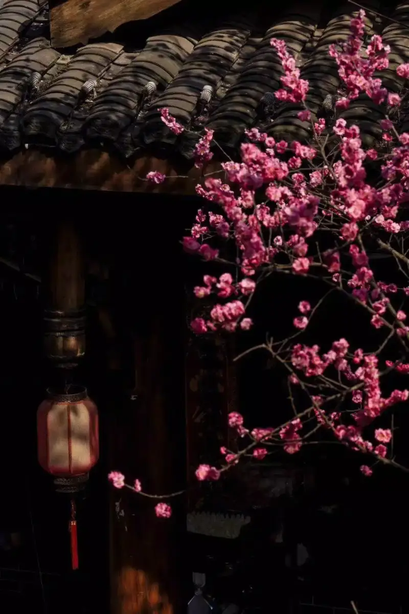
A dark background plus a red lantern
is full of festive character,
and the lantern is the finishing touch of the frame.
7. Courtyard walls
In many gardens,
many courtyard walls are very Chinese,
with graceful lines, gray tile, and white walls.
They are among the best places for photography.
8. Clothing
Traditional dress with a classical feel
is excellent when it is part of a photo.
In any scene, a person gives the frame more character.
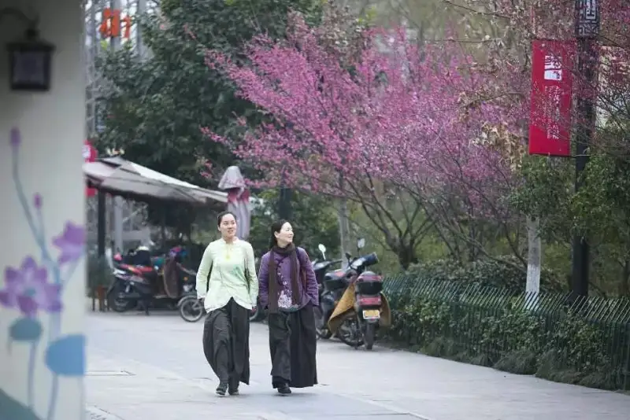
The above are some ideas for shooting scenes.
I hope they help your shooting.
There are many more scenes like this with Chinese elements.
I hope you keep sharing more ideas.